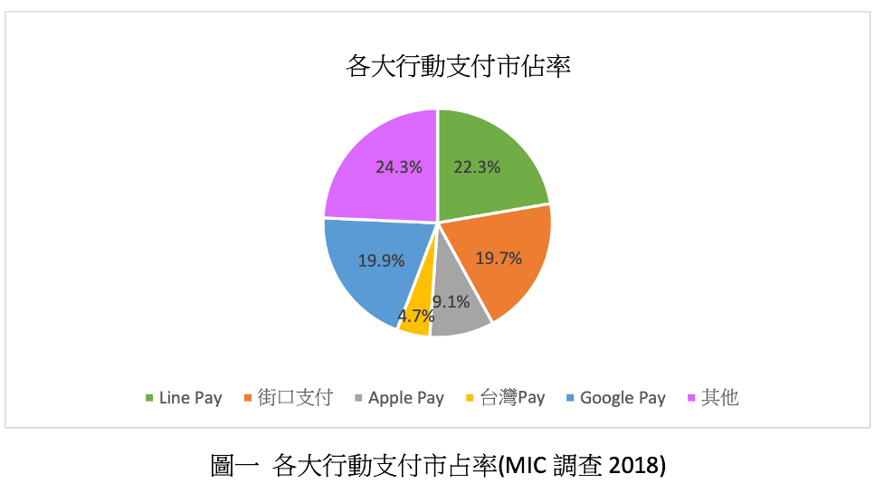
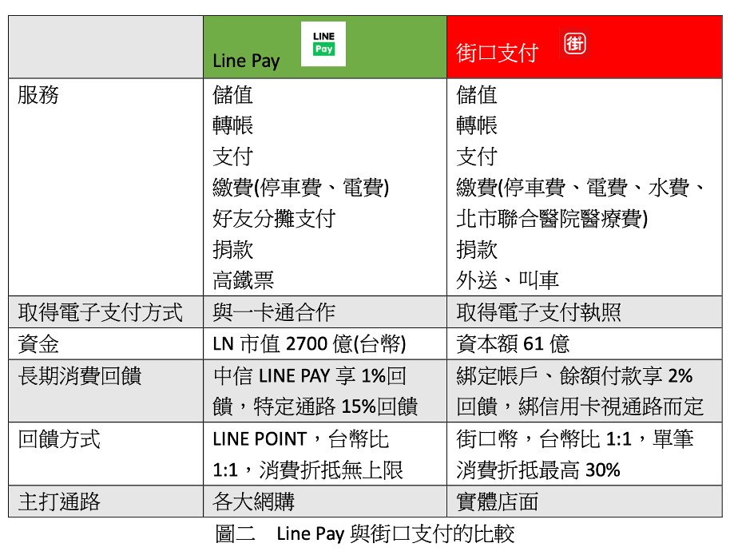

行動支付-街口支付 v.s Line Pay

B05202002 物理四 陳緻庭
隨著行動支付在台灣的普及，大家出門消費時再也不需要帶一大堆鈔票零錢跟 信用卡，買東西結帳時只需小小一隻智慧型手機，輕輕地掃一下 QRCODE 或商 店內的感應器就能解決所有問題。更不須擔心在路上被搶劫或錢包忘記帶。在 政策推動與行動支付業者投入資金祭出優秀的消費回饋之下，根據金管會統計 資料，2019 上半年台灣民間消費金額由行動支付付款的比例已達 41.3%。而在 這些零零總總的行動支付平台中，街口支付以 19.7%的市佔率成為全台第三大 行動支付平台，更僅與第一名的 Line Pay 的 22.3%差了 2.6 個百分比。 
服務範圍
Line Pay 與街口皆有提供電子支付的服務，也就是說，兩種平台使用者除了綁定 信用卡作為金流來源，還可以選擇綁定銀行帳戶。如此一來便能進一步讓大部 分都沒有信用卡的學生族群也能使用行動支付的服務，也能額外提供轉帳、儲 值的服務。不同的是，街口本身在 2008 年 1 月已得到電子支付的執照，而對於 身為外商的 Line Pay 來說申請執照太過麻煩，因此選擇買下 30%的擁有電子支 付執照的一卡通股份，透過一卡通提供電子支付服務，因此若要使用儲值或轉 帳服務，得先將銀行帳戶的錢轉入一卡通的帳戶中。街口支付則只需直接綁定 銀行帳戶即可。 此外，兩種平台瞄準的合作店家也不同，雖然市面上大部分比較大的連鎖商 家，例如 7-11、茶湯會、全家等等都有支援 Line Pay 和街口支付，但以網購付 款出發的 Line Pay 在虛擬通路上的支援比街口更廣，例如 MOMO 購物、博客來 等網站都支援 Line Pay，但不支援街口。然而街口支付主打實體通路，因此夜市小攤販基本上都能看到街口的足跡，但 Line Pay 就比較少見。
走入市場的方式
Line Pay 本身是由通訊軟體 Line 提供的額外服務，因此一開始就有許多用戶， 資本額也較雄厚，有足夠資本做回饋加上本身有許多用戶使 Line Pay 有資格成 為行動支付的先驅者，2016 年底 Line Pay 與中信卡合作，祭出 3%的 Line point 回饋後馬上吸引了大量用戶加入，此後台灣的行動支付市場才逐漸發展起來。 而街口支付一開始的資本遠低於 Line，而且也沒有大量用戶撐腰，因此選擇和 Line Point 截然不同的策略，主打在地化，由單次消費額較小、但商家數量龐大 的夜市起家，如此便能以有限的資本額創造比例足夠吸引人的回饋，同時又達 到普及的目的。對攤商來說，除了不用找零，還免去收到假鈔的風險，通常也 很樂意與街口合作。在累積一定的使用普及度後，街口便將觸角伸向更多通 路，成功成為市佔率第二的支付機構。 
結論
台灣金融體系安全且成熟，是個可以放心使用信用卡的地方，因此行動支付對消費者而言其實沒有增加太多便利性，有時甚至造成不便。比如不熟悉街口支付收帳操作的店員效率降低讓客人排隊等很久，又或著隊伍中一個客人網路不 好 QRCODE 掃半天拖累結帳的進度。這時額外的誘因-回饋就變得相當重要，因 此對行動支付的業者來說，能否在台灣發展資金絕對是個很關鍵的因素，必須 先有資金補貼回饋消費者，才能累積用戶跟合作商家，達到一定的普及率。而 為何這些公司願意出如此大量資金補貼消費者正是身為消費者的我們需要去思 考的地方。
資料來源
https://news.cnyes.com/news/id/4412787 https://progressbar.tw/posts/220 你知道【第三方支付】與【電子支付】之間的 差異嗎?Apple Pay、Line Pay 又算其中的哪種呢?
https://news.cnyes.com/news/id/4412787 〈觀察〉電子支付一年衝兆元商機 百 Pay 齊放下 兩強角力大搏鬥
https://dahetalk.com/2018/08/19/%E3%80%90%E5%9C%96%E8%A7%A3%E3%80%91%E5%8F%B0%E7%81%A3%E8%A1%8C%E5%8B%95%E6%94%AF%E4%BB%98%E5%A4%A7%E6%AF%94%E6%8B%BC%EF%BC%9Aline-pay%E3%80%81%E8%A1%97%E5%8F%A3%E6%94%AF%E4%BB%98%E3%80%81apple-pay/ 【圖解】台灣行動支付大比拼:Line Pay、街口支付、Apple Pay|大和有 話說